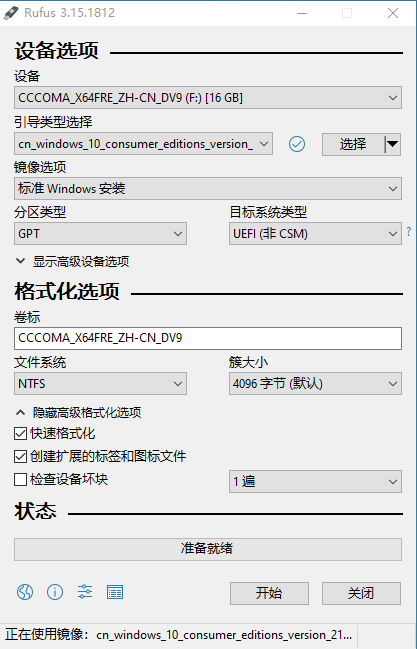
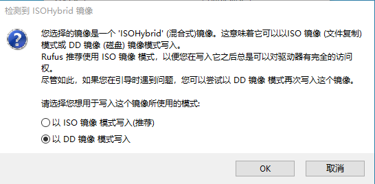

0. 前言
磁盘空间划分：
| 磁盘类型 | Windows 10 | Arch Linux |
|---|---|---|
| 500G HD | 140G 应用数据存储 | 剩余(约325.76G) 用户主目录 /home |
| 250G SSD | 500M EFI, 50M MSR, 100G 系统 | 剩余(约137.94G) 根目录 / |
1. 安装 Windows
1.1. 准备 Windows 系统镜像
下载网址：
Win10 镜像 ed2k 链接：
- Windows 10 (business editions), version 1909 (updated Jan 2020) (x64) - DVD (Chinese-Simplified)
- Windows 10 (consumer editions), version 1909 (updated Jan 2020) (x64) - DVD (Chinese-Simplified)
- Windows 10 21H1 简体中文多版本原版纯净官方镜像下载
1.2. 制作启动 U 盘（使用 Rufus）
使用 Rufus 来制作 U盘 启动盘，选择 Windows10 的 iso 镜像，分区类型为 GPT，目标系统类型为 UEFI，其他默认即可，点击开始。

1.3. 设置 BIOS
插入 U 盘，重启后，进入 BIOS 设置界面：
- 关闭主板设置中的 Secure Boot（Disabled）。
- 调整启动方式为 UEFI（UEFI Only）。
1.4. 进入启动引导界面（自定义）
重启后，看见开机画面，一直按 F12（不同机器不一样）进入启动引导界面。遵循提示点击，直到看到安装类型选择，此时选择 “自定义”。

1.5. 磁盘分区
按 Shift + F10 组合键打开命令提示符窗口。
(1) 进入diskpart模式
1 | # 打开Microsoft DiskPart分区工具 |

(2) 清空磁盘0分区
1 | # 选中磁盘0（500G硬盘） |

(3) 清空磁盘1分区
1 | # 选中磁盘1（250G SSD） |

(4) 系统分区
1 | # 选中磁盘1（SSD）作为系统盘 |

1 | # 确认当前磁盘 |

1.6. 系统安装
完成分区后，在 Windows 安装位置选择界面，点击“刷新”，即可展示刚通过命令行来分区的结果，如下图所示：

选中 “驱动器1分区3”（100G空间的系统安装位置），点击“下一步”，即可开始 Windows 的安装。

1.7. 安装成功
系统安装好后，会自动重启，此时可拔出 U 盘。
重启后，会进行一系列的配置，不再赘述。
安装成功后，进入磁盘管理界面，再从 500G 硬盘中分出 140G 作为个人应用数据存储用，如下图所示：

2. 安装 Arch Linux
2.1. 准备 Arch Linux 镜像
- 下载网站：Arch Linux - Downloads
- 镜像磁力链接：Magnet link for 2021.10.01
2.2. 制作启动 U 盘（使用 Rufus）
选择 Arch Linux 的 iso 镜像，采用 UEFI + GPT，点击开始准备写入。

点击开始时，选择 “以 DD 镜像 模式写入”：

2.3. 启动到 Live 环境
重启后，看见开机画面，一直按 F12（不同机器不一样）进入启动引导界面，一般默认选第一个。
当看到如下界面，说明启动成功。

2.4. 验证引导模式
1 | 若结果显示了目录且没有报告错误, 则系统以 UEFI 模式引导, 否则可能是以 BIOS 模式引导 |
2.5. 禁用 reflector
1 | 禁用 reflector，避免自己更新 mirrorlist |
2.6. 连接网络
可以先检查下无线设备是否被禁用：
1 | 检查无线设备状态 |
使用 iwctl 连接无线网络：
1 | 查看网络设备信息 |
若为有线情况，理论上只要插上网线，就能直接上网。
2.7. 更新系统时间
1 | root@archiso ~ # timedatectl set-ntp true |
2.8. 建立硬盘分区
(1) 查看磁盘信息
1 | 查看磁盘信息 |
lsblk 显示如下图所示：

- sda 为 500G 的硬盘，140G 的 sda1 为 win10 的 个人应用数据存储盘，剩余的都用来作为 Arch Linux 的用户主目录
/home； - nvme0n1 为 250G 的 SSD，500M 的 nvme0n1p1 为 win10 的 efi，50M 的 nvme0n1p2 为 win10 的 msr，99.4G（约100G）的 nvme0n1p3 为 win10 的系统盘， nvme0n1p4 为 win10 的恢复系统盘，剩余的都用来作为 Arch Linux 的根目录
/。
(2) 创建/格式化/挂载 根目录
1 | root@archiso ~ # cfdisk /dev/nvme0n1 |
- 创建分区：此时移动键盘向下按键，选中 Device 列表最下方显示有 “Free space” 所在行，选择 “New” 并回车，左下角 “Partition size” 默认填充了当前磁盘最大可用空间（可自行修改），确认输入好分区大小后，回车。
- 写入分区：选择 “Write” 并回车，然后输入 yes 确认将该分区写入磁盘。
- 退出 cfdisk：选择 “Quit” 退出。
此时输入 lsblk 可查看新增分区，如 nvme0n1 下多了一个新增分区 nvme0n1p5。
分区格式化：
1
2将刚刚分好的区格式化为ext4格式，这里认准分区号是nvme0n1p5
root@archiso ~ # mkfs.ext4 /dev/nvme0n1p5
** 挂载分区**：
1
2将根目录挂载到/mnt
root@archiso ~ # mount /dev/nvme0n1p5 /mnt
注意： 挂载分区一定要遵循顺序，先挂载根（root）分区（到 /mnt），再挂载引导（boot）分区（到 /mnt/boot 或 /mnt/efi，如果单独分出来了的话），最后再挂载其他分区。否则您可能遇到安装完成后无法启动系统的问题。
(3) 创建/格式化/挂载 用户主目录
1 | root@archiso ~ # cfdisk /dev/sda |
创建和写入分区 同上面操作。
此时输入 lsblk 可查看新增分区，如 sda 下多了一个新增分区 sda2。
分区格式化：
1
2将刚刚分好的区格式化为ext4格式，这里认准分区号是sda2
root@archiso ~ # mkfs.ext4 /dev/sda2** 挂载分区**：
1
2
3root@archiso ~ # mkdir /mnt/home
将用户主目录挂载到/mnt/home
root@archiso ~ # mount /dev/sda2 /mnt/home
(4) 挂载 efi
由于是双系统安装，Arch Linux 的 EFI 分区共用的是 Windows的。
1 | root@archiso ~ # mkdir /mnt/efi |
(5) 确认所有挂载情况

2.9. 安装基本系统
安装之前，可考虑更换国内镜像源来加快下载速度，如 中科大 ustc、清华 tsinghua。
使用 vim /etc/pacman.d/mirrorlist 修改镜像源，在首行加入：
1 | # 清华大学 |
更新软件包缓存：
1 | root@archiso ~ # pacman -Syy |
安装基础包：
1 | #安装base软件包和Linux内核以及常规硬件的固件 |
2.10. 生成 fstab 文件
1 | root@archiso ~ # genfstab -U /mnt >> /mnt/etc/fstab |
2.11. Chroot
1 | Change root 到新安装的系统 |
2.12. 设置时区
1 | 设置时区 |
2.13. 设置 locale
1 | [root@archiso /]# vim /etc/locale.gen |
找到 en_US.UTF-8 UTF-8 和 zh_CN.UTF-8 UTF-8 所在行，分别删除前面的 #，保存退出。
1 | 生成locale信息 |
创建并写入 /etc/locale.conf 文件：vim /etc/locale.conf
填入内容：LANG=en_US.UTF-8
退出保存。
2.14. 设置 hostname
创建并写入hostname：vim /etc/hostname
填入内容（按需修改）：utopia
修改hosts：vim /etc/hosts
填入内容：
1 | 127.0.0.1 localhost |
退出保存。
2.15. 设置 root 用户密码
为 root 用户创建密码：
1 | [root@archiso /]# passwd root |
2.16. 创建启动器
- 安装微码：
不确定 CPU 型号，可以安装pacman -S neofetch来查看自己电脑的 CPU 型号。1
2
3
4
5intel的CPU安装intel-ucode
[root@archiso /]# pacman -S intel-ucode
amd的CPU安装amd-ucode
[root@archiso /]# pacman -S amd-ucode
对于UEFI启动模式，需要同时安装 grub 和 efibootmgr：
1 | grub是启动引导器，efibootmgr被grub脚本用来将启动项写入NVRAM |
Grub 2.06 更新 os-prober 用户需要手动干预：
- 如果您正在使用 os-prober 生成其他系统的引导项，grub 2.06 不再自动启用 os-prober，您需要添加
GRUB_DISABLE_OS_PROBER=false至 /etc/default/grub 配置文件中并且重新运行 grub-mkconfig；- grub 2.06 现在会自动添加 固件设置菜单 引导项目，无需手动创建。
鉴于此需要手动启用os-prober来确保Windows能被正确识别：
1 | [root@archiso /]# vim /etc/default/grub |
在里面找一条空行输入：GRUB_DISABLE_OS_PROBER=false，保存退出。
1 | 将 GRUB EFI 应用 grubx64.efi 安装到 /efi，并将其模块安装到 /boot/grub/x86_64-efi/ |

2.17. 完成安装
退出新系统并取消挂载：
1 | 退出arch-chroot |
重启后，输入 root 用户和密码进行登录。
连接网络：
1 | 立即启动dhcp |
3. Arch Linux 桌面环境与常用应用
3.1. 设置 archlinuxcn 源 和 安装 yay
1 | 修改 /etc/pacman.conf，末尾添加： |
AUR 是 Arch Linux 社区维护的软件源，官方地址：AUR (en) - Home (archlinux.org)。
可通过 yaourt （曾经主流，现已停止维护） 和 yay （目前首选）来使用 AUR 源软件。
3.2. 增加非 root 用户
1 | wheel附加组可sudo进行提权 -m同时创建用户家目录，wxr为用户名 |
3.3. 安装双显卡驱动
(1) 安装 xorg：
1 | 图形界面必备 |
所有 AMD 显卡建议使用开源驱动，英伟达显卡建议使用闭源驱动。
(2) 安装英特尔核心显卡：
1 | [root@utopia ~]# pacman -S mesa lib32-mesa vulkan-intel lib32-vulkan-intel |
Intel graphics Wiki：Intel graphics - ArchWiki (archlinux.org)
Arch Wiki 一般不建议安装 xf86-video-intel，而是使用 xorg 的 modesetting 驱动（较为稳定）。
注意：只有 Intel HD 4000 及以上的核显才支持 vulkan。
(3) 安装英伟达独立显卡：
1 | 较新型号的独立显卡直接安装如下几个包即可 |
NVIDIA Wiki: NVIDIA - ArchWiki (archlinux.org)
(4) 安装双显卡切换工具：
1 | [root@utopia ~]# yay -S optimus-manager optimus-manager-qt |
optimus-manager 提供三种模式：仅用独显、仅用核显、hybrid 动态切换模式。
安装完成后重启即可使用。安装完成后 optimus-manager 会默认 enable optimus-manager 的服务，可在重启前检查其状态，若未 enable，可
sudo systemctl enable optimus-manager。可参考：
3.4. 安装图像界面 - KDE Plasma
3.4.1. 安装 KDE 桌面
1 | 安装plasma-meta元软件包 |
- KDE wiki：KDE (简体中文) - ArchWiki (archlinux.org)
- 元软件包（如 plasma-meta） 和 软件包组（如 plasma） 的区别可参看：Meta package and package group (简体中文) - ArchWiki (archlinux.org)
plasma-meta：元软件包，通过依赖关系安装软件包。若后续有新增软件包会在更新时自动安装；用户无法选择仅安装元软件包依赖的部分软件。
plasma：软件包组，仅是一个列表，与 plasma-meta 提供功能类似。若后续有新增软件包==不会==在更新时自动安装；用户可以选择安装组中的部分软件，也可以选择仅删除软件包组中的部分软件。
重启后，即可进入 KDE 图形界面。
3.4.2. 设置和连接网络
完成重启并输入用户密码进入桌面后，打开 konsole 命令终端，进行网络设置。
1 | 确保iwd开机处于关闭状态，其无线连接会与NetworkManager冲突 |
3.4.3. 设置交换文件 swap
在桌面环境中，交换分区或文件用来实现休眠（hibernate）的功能，即将当前环境保存在磁盘的交换文件或分区部分。交换文件与分区性能相同，且交换文件更为灵活，可随时变更大小，增加与删除。
1 | 创建16G的交换空间 大小根据需要自定 |
最后，向/etc/fstab 中追加如下内容：/swapfile none swap defaults 0 0
KDE 自身提供开箱即用的睡眠功能(suspend)，即将系统挂起到内存，消耗少量的电量。休眠(hibernate)会将系统挂起到交换分区或文件，几乎不消耗电量。
休眠功能：Power management/Suspend and hibernate - ArchWiki (archlinux.org)
3.4.4. 安装 KDE 应用
1 | 安装 kde 应用包库：如 kde-applications 或 kde-applications-meta，亦可选择性安装： |
参考资料
[1] Installation guide (简体中文) - ArchWiki (archlinux.org)
[2] Arch Linux 安装使用教程 - ArchTutorial - Arch Linux Studio
[3] 2021 Archlinux双系统安装教程（超详细） - 知乎 (zhihu.com)
[4] Arch Linux + KDE安装教程 - 简书 (jianshu.com)